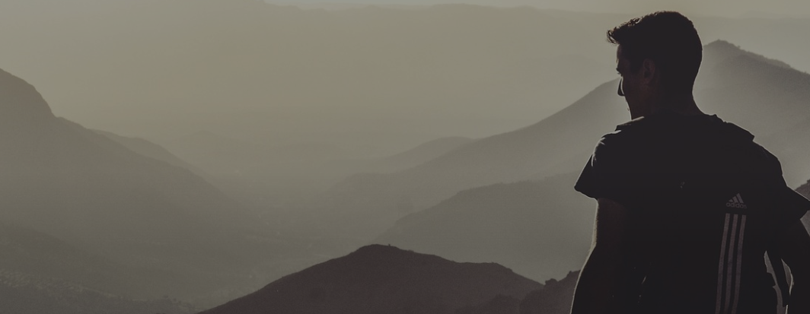

Tourists travel to get acquainted
TRAVEL
Tourists travel to get acquainted
with the history, culture, architecture and art
of other cities and countries.
Kiev is the capital of our country. It is the largest city in Ukraine. More than three million people live there. Kiev was founded more than 1500 yearsago. It is the political, economic, centre of our country.There are many factories in Kiev. They make different products. In Kiev there are many museums monuments, theatres, cinemas libraries and palaces. Thousands of students study at Kiev-Mohila academy, at Kiev University, many institutes and collegesKiev is a large transport centre. Kiev metro is very beautiful.Kiev is situated on the banks of the river Dnieper. The city is very green. It is one of the most beautiful cities of Ukraine Ukrainian Verkhovna Rada, president and government are located in Kiev.
Ambassadors of many countries live in the capital of Ukraine too. We are proud that our capital is one of the best and oldest cities in the world.Khreschatyk is the main street in Kiev. It is not very long, but it is wide and straight. You can see many cars and trolley buses on Khreschatyk. There are many big green trees in it. A lot of people go to Khreschatyk every day. Some of them go shopping because there are many good shopsand big market there. Other people go to the cinema, look at the fountains or sit on the benches. In the evening many people walk in KhreschatykThere you can see many bright lights. People like the main street of Kiev because it is nice and green.Kiev is situated on the banks of the river Dnieper.
The city is very green. It is one of the most beautiful cities of Ukraine. Ukrainian Verkhovna Rada, president and government are located in Kiev. Ambassadors of many countries live in the capital of Ukraine too. We are proud that our capital is one of cities in the world.Khreschatyk is the main street in Kiev. It is not very long, but it is wide and straight. You can see many cars and trolley buses on Khreschatyk. There are many big green trees in it. A lot of people go to Khreschatyk every day. Some of them go shopping because there are many good shops and big market there. Other people go to the cinema, look at the fountains or sit on the benches. In the evening many people walk in Khreschatyk. There you can see many bright lights. People like the main street of Kiev because